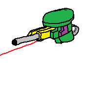

Introducing the Vodka and Chai Technologies Camera with Turret: Advanced Surveillance Meets Active Protection
Vodka and Chai Technologies takes home security to the next level with our Camera equipped with a turret. This cutting-edge device is designed to offer more than just surveillance; it provides active, non-lethal defense capabilities to keep your home safe. Combining a high-definition camera with a fully integrated turret system, our device ensures that you not only have eyes on every corner of your home but also the means to deter intruders when necessary.
Key Features
1. 360° High-Definition Camera
At the core of our product is a powerful 360° camera that provides full panoramic coverage of any room or outdoor area. Equipped with night vision and motion detection, the camera delivers crystal-clear video, both in daylight and in complete darkness. You’ll never miss a moment, as the camera continuously monitors for any movement, storing footage securely in the cloud for review at any time. The wide-angle lens ensures that blind spots are a thing of the past, offering comprehensive surveillance of your home or property.
2. Integrated Turret for Active Defense
What sets this camera apart is its integrated turret system, designed for home defense. The turret features non-lethal deterrents such as strobe lights, a loud siren, and optional defense tools like pepper spray, airsoft pellets, or even a water cannon for specific scenarios. The turret can be activated automatically if the camera detects suspicious activity or manually through the Vodka and Chai app. This ensures that you not only have a watchful eye on your home but can also take immediate action to deter potential intruders.
3. AI-Powered Motion Detection
The camera is equipped with advanced AI that powers its motion detection system. This technology distinguishes between harmless movements—like pets, falling leaves, or changes in light—and genuine security threats. By learning from the environment and analyzing patterns, the AI minimizes false alarms and ensures that the turret is only activated when necessary. Over time, the AI becomes smarter and more accurate, enhancing the reliability of your home defense system.
4. Two-Way Audio Communication
Our camera includes built-in two-way audio, allowing you to communicate directly with anyone in its vicinity. Whether you need to speak with family members, visitors, or potential intruders, you can do so through the Vodka and Chai app. The audio is clear and crisp, ensuring effective communication at any time of day. This feature can be used to warn off unwanted guests or simply to greet someone at the door.
5. Smart Home Integration
Much like our other products, the Vodka and Chai Camera with Turret integrates effortlessly into your existing smart home system. It works with Amazon Alexa, Google Home, and Apple HomeKit, allowing you to control the camera and turret with simple voice commands. Additionally, the camera can be paired with other security devices, such as door sensors, smart locks, and other cameras, creating a fully integrated security network throughout your home.
6. Remote Monitoring and Control
With the Vodka and Chai mobile app, available on iOS and Android, you can monitor your camera feed in real-time from anywhere in the world. The app allows you to control the turret, receive alerts, and view live footage from the camera. If suspicious activity is detected, you’ll receive immediate notifications and can access recorded footage to assess the situation. The app also lets you manually activate the camera’s turret and deterrent features for immediate intervention.
7. Customizable Defense Options
Depending on your security needs, the Vodka and Chai Camera turret can be equipped with customizable defense options. You can choose from non-lethal deterrents such as airsoft pellets, pepper spray, or a water cannon to respond to various threats. These options ensure that the camera’s defense system is both safe and effective, providing enough force to deter intruders without causing permanent harm. This makes the Vodka and Chai camera ideal for homes with families and pets.
8. Weatherproof Design for Outdoor Use
The camera with turret is designed to be durable and weatherproof, making it ideal for both indoor and outdoor use. Its high-grade, impact-resistant casing ensures it can withstand harsh weather conditions, including rain, snow, and high winds. Whether you need to monitor your living room, backyard, or driveway, the Vodka and Chai Camera is built to handle any environment.
9. Night Vision and Infrared Capabilities
Our camera features advanced night vision technology that ensures clear, high-definition footage even in low-light or no-light conditions. Infrared sensors detect movement in the dark, triggering both the camera and the turret when necessary. The night vision mode automatically activates when light levels drop, providing around-the-clock surveillance and defense without any gaps.
10. Long-Lasting Power Supply
The Vodka and Chai Camera with Turret is powered by a long-lasting, rechargeable battery, ensuring uninterrupted operation for extended periods. It also comes with the option of a solar-powered panel for continuous power, particularly in outdoor installations. When the battery runs low, you’ll receive a notification through the mobile app, and the camera will automatically switch to energy-saving mode until it’s recharged.
Conclusion: Ultimate Security with Active Deterrence
The Vodka and Chai Technologies Camera with Turret is not just a surveillance tool; it’s an all-in-one security system that actively defends your home. By combining cutting-edge camera technology with a turret for active deterrence, we’ve created a product that offers both comprehensive monitoring and immediate protection. Whether it’s day or night, rain or shine, you can trust that our camera is working tirelessly to keep your home and loved ones safe. Welcome to the future of home security, where vigilance and defense come together seamlessly.